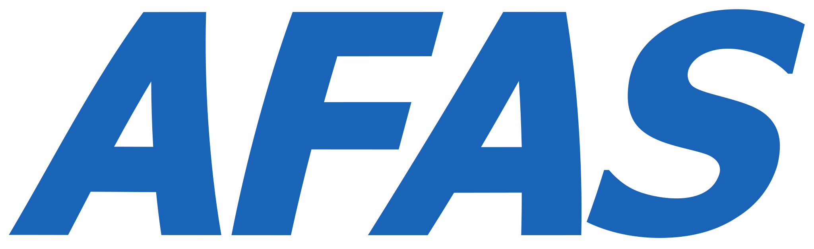
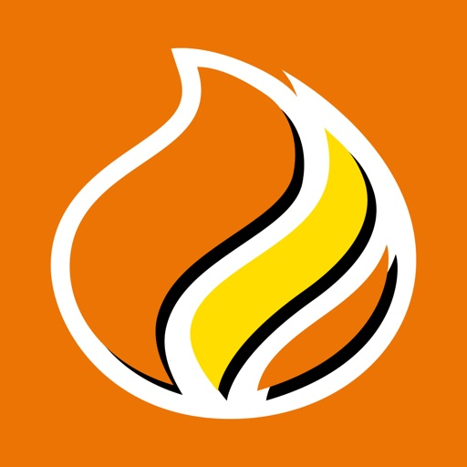

Software Engineer | ICT TriOpSys

Feb 2026 - Present | Woerden
Software engineer working on projects for clients
Software Engineer
A full overview of my professional experience, from internships to current role.
Feb 2026 - Present | Woerden
Software engineer working on projects for clients
Feb 2025 - Jan 2026 | Nieuwegein & Utrecht
Started with a traineeship at Sopra Steria in February, then transitioned to Software Engineer role at client ProRail in May. Contributed to the Trinity simulation project — a sophisticated environment replicating official Train Traffic Controller software for training and R&D purposes. Built new modules in the Java backend and React frontend to support realistic train scenarios and give instructors and testers greater control during training sessions. Actively improved quality through code reviews, test support, and release pipeline optimization, enabling rapid and reliable feature delivery.

Feb 2024 - Jun 2024 | Leusden
Developed a web editor for AFAS to accelerate and simplify the development process of their tax software in response to legislative changes.

Mar 2022 - Mar 2024 | Barendrecht
Developed a program allowing customers to enter their license plate number to check if their car fits in the car wash. Created an interactive map enabling customers to locate Washboxes and tire pumps. Implemented small software solutions to simplify day-to-day operations.
Sep 2022 - Jan 2023 | Utrecht
Independently developed, implemented, and managed a complete Chrome plug-in that allows recruiters to save LinkedIn profiles with specific data into a database.
A selection of projects from work, internships, school, and freelance work.
Client Project · ProRail (via Sopra Steria)
Contributed to Trinity, a sophisticated simulation environment replicating official Train Traffic Controller software for training purposes. Built new modules in the Java backend and React frontend to support realistic train scenarios. Implemented features that give instructors greater control during training sessions.
Internship · AFAS Software
Developed a web-based editor to accelerate and simplify the development process of AFAS tax software in response to legislative changes. Built an intuitive interface for configuring tax rules and parameters.
Client · Berkman Energie Service
Created an interactive map enabling customers to locate Washboxes and tire pumps across different locations. Integrated with backend services to display real-time availability and directions.
Internship · Mploy Associates
Built a Chrome plug-in for recruiters to save LinkedIn profiles with specific data into a database, independently developed end-to-end during my internship.
Client · Berkman Energie Service
Developed an iframe that allows customers to enter their license plate number to check whether their car fits in the car wash.
School · Hogeschool Utrecht
Built a Tetris game featuring both single-player mode and online multiplayer, developed as a school project.
Group project · Hogeschool Utrecht
Rebuilt the UMC Utrecht WKZ website to match their technological standards as part of a school group project.
School · Hogeschool Utrecht
Developed a Lingo game API using a test-driven development methodology, including CI integration.
School · Hogeschool Utrecht
Built a Black Jack API as part of a school project using Java, Spring Boot, Hibernate, and PostgreSQL.
Group project · Hogeschool Utrecht
Created a dashboard showing online friends, game stats, recommended games, and a planner as a group school project built with Python.
Group project · Hogeschool Utrecht
Built a system where travelers can leave a message that gets posted on Twitter, with an admin panel for moderation, developed as a school project.
My academic background from secondary school through university.
Sep 2020 - Jun 2024 | Utrecht University of Applied Sciences
Four-year applied sciences degree covering software engineering, project work, and two internships in a professional software development context.
Sep 2018 - Jul 2019 | British School of Bahrain (Sixth Form)
Sep 2016 - Jul 2018 | British School of Bahrain
Professional certifications and awards.